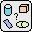
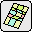
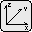
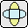
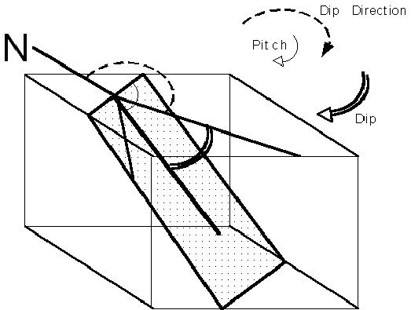

Parameter groups
All structural modelling is kinematic and is based on the application of displacement equations or replacement zones based on seven basic classes of parameters, namely Form, Surface Shape, Position, Orientation, Scale, Ellipsoidal Scale & Stratigraphy.
Parameter Group Icons
The deformation event definition windows are standardised so that the same basic window is used to define all event types, and parameters belonging to each class are grouped together. Each group may be selected by clicking on the appropriate icon on the right hand side of the window, or selecting the group from the menu above the groups of parameters. The parameter group icons (different combinations of which are present for different events) are:




Form Surface Shape Position Orientation Scale Ellip Scale Stratigraphy
Form
The form parameter is generally prescribed by the program from a few set shapes, with the notable exception of folds, which can have any profile.
Surface Shape
For unconformities, faults and shear zones the defining surface can be read in as a DXF triangulated surface, and can be loaded, seen in plan view and rescaled using parameters from this group.
Position
The coordinate convention used in this program assumes X (EW) is positive towards the East, Y (NS) is positive towards the North and Z is positive up.
The default block is defined by a rectangular volume with opposite corners at 0,0,0 and 10000,7000,5000 metres X,Y,Z (W,N,Z) respectively, so that the top surface of the block is the 'map area'. Thus events which are localised and defined to occur outside this block will only be seen if the origin or scale of the block are altered or subsequent deformation brings them into view. An overiding XY offset may be defined to match the model to real world coordinate systems.
Orientation
Planar features are defined by their dip and dip direction, and independent linear features are defined by their plunge and plunge direction. Linear features associated with planes, such as slip vectors on faults, are defined by their pitch.

The spatial dimension of all features is defined in metres.
Ellipsoid Scale
Ellipsoidal plugs and ellpitical and curved faults require the dimensions of the ellipsoid to be defined.
Stratigraphy This allows the definition of a stratigraphy, for the base stratigraphy and unconformities.
Noddy · open source under the MIT licence · Loop3D/noddy_qt